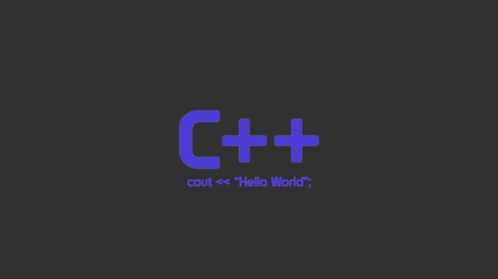
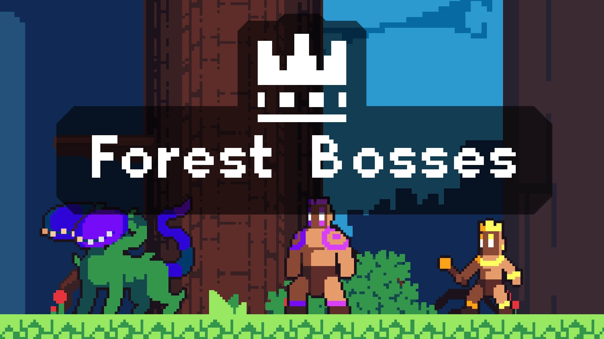

C++ turn based stategy
-Een klein console-gebaseerd vechtspel-

Voor dit project heb ik zelfstandig een kleine turn-based strategy game ontwikkeld in C++ en getest op mobiel met CxxDroid. In het spel heeft elke speler een normale en een speciale aanval, waarbij de speciale aanval slechts één keer gebruikt kan worden. Spelers hebben daarnaast verschillende stats zoals health, attack, defense en special, wat zorgt voor strategische keuzes tijdens de beurt.
Details
Uitgekomen: Augustus 2025
Engine: cxxdroid
Taal: C++
Teamgrootte: 1
Rol: Gameplay Developer
Tijd: zomervakantie
Mijn bijdrage
Turn-Based Combat
- Beurtensysteem waarin spelers kiezen tussen normale en speciale aanvallen.
- Invoercontrole zodat alleen geldige keuzes (‘a’ of ‘s’) worden geaccepteerd.
Speciale Aanvallen
- Unieke speciale aanvallen per karakter met éénmalig gebruik per gevecht.
- Voorbeelden: HP herstellen, dubbele schade, verdediging vijand verlagen, of hoge aanval tegen eigen verdediging.
Enemy Logic
- Vijand reageert op speleracties.
- Health en stats worden dynamisch aangepast na elke actie.
Stat Management & Feedback
- Bijhouden van speler- en vijandstats: health, attack, defense en special.
- Console-uitvoer toont schade en acties van speler en vijand, inclusief meldingen bij speciale aanval.
// Laat de speler aanvallen of speciale aanval gebruiken
do {
cout << "Type 'a' to attack and 's' to special attack\n\n";
cin >> userInput;
} while (userInput != "s" && userInput != "S" && userInput != "a" && userInput != "A");
// Clear the screen
system("cls");
if (userInput == "a" || userInput == "A") {
cout << "You chose to attack! \n";
int EnemyHealth = stoi(boss[1]);
EnemyHealth -= stoi(charcaters[ChosenCharachter][2]); // minus player attack
EnemyHealth += stoi(boss[3]); // plus enemy defense
boss[1] = to_string(EnemyHealth);
cout << "You did " << stoi(charcaters[ChosenCharachter][2]) - stoi(boss[3]);
cout << " damage! \n\n";
// Enemy attacks
int NewPlayerHealth = stoi(charcaters[ChosenCharachter][1]);
NewPlayerHealth -= stoi(boss[2]);
NewPlayerHealth += stoi(charcaters[ChosenCharachter][3]);
charcaters[ChosenCharachter][1] = to_string(NewPlayerHealth);
cout << "Enemy did " << (stoi(boss[2]) - stoi(charcaters[ChosenCharachter][3]));
cout << " damage to you!\n\n";
} else if (SpecialRemaing == 1) {
cout << "You chose to use your special! \n";
switch (ChosenCharachter) {
case 0:
// Heal self
charcaters[ChosenCharachter][1] = to_string(stoi(charcaters[ChosenCharachter][1]) + 30);
cout << "You used " << charcaters[ChosenCharachter][4] << " and restored 30 hp to yourself!\n\n";
break;
case 1: {
// Double attack
int EnemyHealth = stoi(boss[1]);
EnemyHealth -= stoi(charcaters[ChosenCharachter][2]) * 2;
EnemyHealth += stoi(boss[3]);
boss[1] = to_string(EnemyHealth);
cout << "You used " << charcaters[ChosenCharachter][4] << " and did ";
cout << stoi(charcaters[ChosenCharachter][2]) - stoi(boss[3]);
cout << " double damage! \n\n";
break;
}
case 2: {
// Lower boss defense
int bossdef = stoi(boss[3]);
bossdef -= 15;
boss[3] = to_string(bossdef);
cout << "You used " << charcaters[ChosenCharachter][4] << " and lowered enemy defence!\n\n";
break;
}
case 3:
// High attack, lose own defense
int EnemyHealth = stoi(boss[1]);
EnemyHealth -= 70;
EnemyHealth += stoi(boss[3]);
boss[1] = to_string(EnemyHealth);
charcaters[ChosenCharachter][3] = to_string(0);
cout << "You used " << charcaters[ChosenCharachter][4] << " and did 70 atk but lost all your def...\n\n";
break;
}
SpecialRemaing = 0;
// Enemy attacks after special
int NewPlayerHealth = stoi(charcaters[ChosenCharachter][1]);
NewPlayerHealth -= stoi(boss[2]);
NewPlayerHealth += stoi(charcaters[ChosenCharachter][3]);
charcaters[ChosenCharachter][1] = to_string(NewPlayerHealth);
cout << "Enemy did " << (stoi(boss[2]) - stoi(charcaters[ChosenCharachter][3]));
cout << " damage to you!\n\n";
} else {
cout << "You already used your special! \n\n";
}
